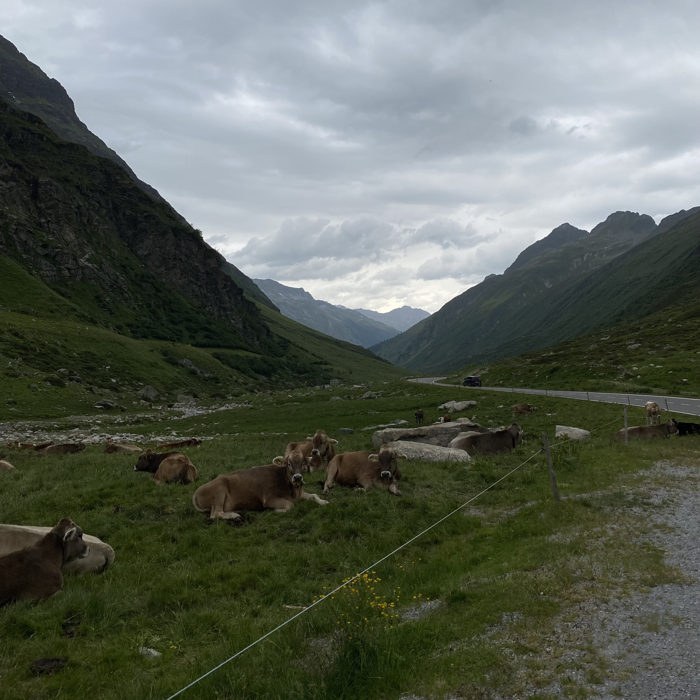
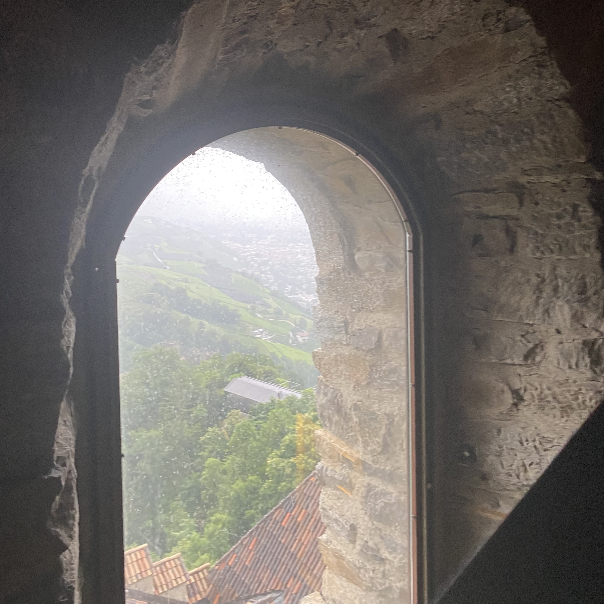

| activity | dinner | favorite part | |
|---|---|---|---|
| day 1 | Mieders Alpine Coaster | Knödel (German dumplings) | coaster down the mountain! |
| day 2 | lunch with Dad's family | rice & chicken | Schnitzel & fries for lunch |
| day 3 | visit Mom's family | pizza | dinner! |
| day 4 | drive to Mirano, Italy | the best macoroni | seeing so many cows |
| day 5 | Tyrol Castle & city | pizza | walking around the city! |

Day 4: Brown cows in Austria!
listen to their cowbells! (actual audio from this image)

Day 5: View from inside Tyrol Castle in Mirano, Italy! Built before the year 1100.